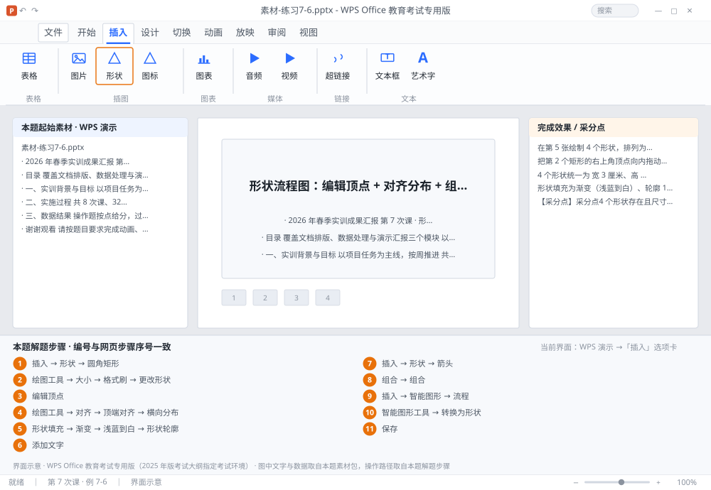

完成比对文档 · 例 7-6
形状流程图：编辑顶点 + 对齐分布 + 组合 + 智能图形转换 ｜ 第 7 次课 / WPS 演示 ｜ 网页：实操-演示1.html ｜ 考试环境：WPS Office 教育考试专用版（2025 年版考试大纲指定考试环境）
用途 本页按修订后的题目要求与解题步骤生成，是交卷自查的结果基准：
逐项列出每一步应出现的可复核结果，配合模拟操作截图与解题结果文件使用。
它不是素材包的一部分，不会预置答案动作；起始素材仍从本题素材包下载。
一、本题起始素材包
目录：练习素材/练习7-6-形状与智能图形/ ｜
下载包：练习素材/下载/练习7-6-形状与智能图形.zip
二、题目要求
- 在第 5 张绘制 4 个形状，排列为横向流程：圆角矩形 → 矩形 → 菱形 → 圆角矩形。
- 把第 2 个矩形的右上角顶点向内拖动（用编辑顶点），做成斜角。
- 4 个形状统一为 宽 3 厘米、高 1.5 厘米，顶端对齐并横向分布。
- 形状填充为渐变（浅蓝到白）、轮廓 1.5 磅深蓝，形状内文字 14 磅居中。
- 把 4 个形状与 3 个箭头连接符组合为一组。
- 在第 6 张插入智能图形（流程类），输入 4 个步骤，然后把智能图形转换为形状。
- 保存为 学号-姓名-练习7-6.pptx。
三、解题步骤（编号与下方核对表、截图编号一致）
- 插形状。选中第 5 张 →「插入」→「形状」→ 选「圆角矩形」→ 在页面拖出；再用同样方法插矩形、菱形、圆角矩形。
- 统一尺寸。逐个选中 →「绘图工具」→ 在「大小」里宽度 3 厘米、高度 1.5 厘米。或用「格式刷」式的做法：设好第一个，复制粘贴出其余三个，再「更改形状」。
- 编辑顶点。选中第 2 个矩形 → 右键 →「编辑顶点」→ 形状四角出现黑色小方块 → 点住右上角向左下拖动 → 点空白处退出。这样得到一个斜角矩形，比换形状更灵活。
- 对齐与分布。按住 Shift 依次选中 4 个形状 →「绘图工具」→「对齐」→「顶端对齐」→ 再「横向分布」。分布要求至少选中 3 个对象，否则菜单是灰的。
- 填充与轮廓。选中全部形状 →「形状填充」→「渐变」→ 选「浅蓝到白」；「形状轮廓」→ 深蓝、粗细 1.5 磅。
- 文字。右键形状 →「添加文字」→ 输入步骤名 → 字号 14、居中、垂直居中。
- 连箭头。「插入」→「形状」→ 选「箭头」→ 从形状边缘拖到下一个形状（出现连接点吸附）。
- 组合。选中 4 个形状与 3 个箭头 → 右键 →「组合」→「组合」。之后整体移动、缩放。
- 智能图形。选中第 6 张 →「插入」→「智能图形」→ 选「流程」类 → 在文本窗格输入 4 个步骤 → 关闭窗格。
- 转换为形状。选中智能图形 →「智能图形工具」→「转换为形状」→ 确认。转换后每个节点变成独立形状，可单独调格式（但不再有智能图形的自动布局）。
- 保存。Ctrl+S。
四、完成效果 / 采分点
采分点4 个形状存在且尺寸统一 3×1.5 厘米 · 第 2 个形状已用编辑顶点改形 · 顶端对齐 + 横向分布 · 渐变填充 + 1.5 磅深蓝轮廓 · 文字 14 磅居中 · 形状与箭头已组合 · 智能图形已插入并转换为形状
五、逐项完成核对表
| 步骤 | 关键操作路径 | 应出现的结果（可复核） |
|---|
| 1 | 插形状 | 5 张、「插入」、「形状」、「圆角矩形」 |
| 2 | 统一尺寸 | 「绘图工具」、「大小」、3 厘米、1.5 厘米、「格式刷」 |
| 3 | 编辑顶点 | 「编辑顶点」 |
| 4 | 对齐与分布 | 「绘图工具」、「对齐」、「顶端对齐」、「横向分布」 |
| 5 | 填充与轮廓 | 「形状填充」、「渐变」、「浅蓝到白」、「形状轮廓」、1.5 磅 |
| 6 | 文字 | 「添加文字」 |
| 7 | 连箭头 | 「插入」、「形状」、「箭头」 |
| 8 | 组合 | 「组合」 |
| 9 | 智能图形 | 6 张、「插入」、「智能图形」、「流程」 |
| 10 | 转换为形状 | 「智能图形工具」、「转换为形状」 |
| 11 | 保存 | 保存 |
六、模拟操作截图

界面示意 · WPS Office 教育考试专用版 · 橙色编号与本题解题步骤序号一致；
图中文字与数据取自本题素材包，功能入口取自本题解题步骤。
核对方法：按网页解题步骤完成并另存自己的成稿后，逐行比对本表第 3 列的
参数、公式、区域、文件名与对象数量；再对照网页「完成效果 / 采分点」检查版式是否一致。